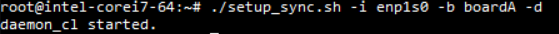
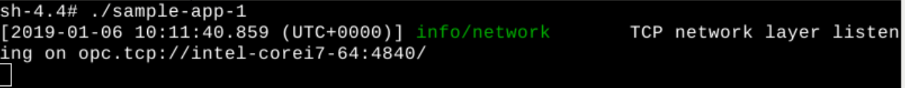
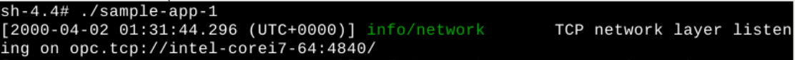
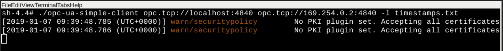
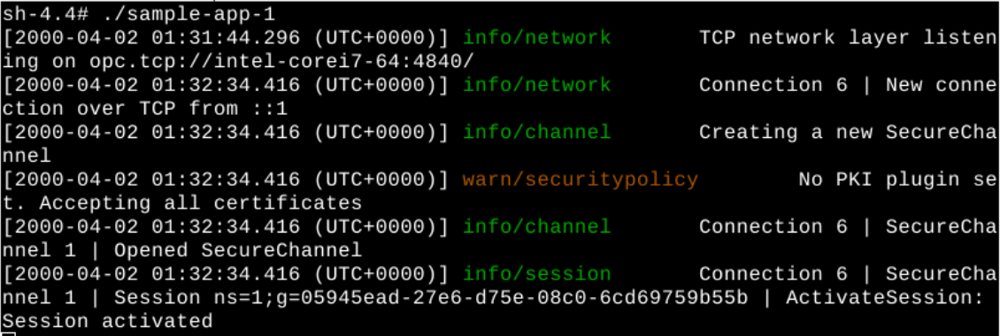

Refer to Demo 1: IEEE 802.1AS Time Synchronization for a detailed description of the software components of the boards used.
Follow these steps to establish time synchronization quality measurement using sample-app-1:
Start daemon_cl with a script on Board A. Use a terminal named Synchronization Terminal.
[Board A] Synchronization Terminal
The first command makes the script executable.
$ cd /opt/intel/iotg_tsn_ref_sw/scripts $ chmod a+x setup_sync.sh $ ./setup_sync.sh -i enp1s0 -b boardA -dWhere
| Argument | Description |
|---|---|
| -i enp1s0 | Specify to use interface enp1s0 |
| -b boardA | Specify that the script is running on Board A |
| -d | Run synchronization via daemon_cl |
daemon_cl will be started immediately.

Start daemon_cl with a script on Board B. Use a terminal named Synchronization Terminal.
[Board B] Synchronization Terminal
The first command makes the script executable. Run the following command:
$ cd /opt/intel/iotg_tsn_ref_sw/scripts $ chmod a+x setup_sync.sh $ ./setup_sync.sh -i enp1s0 -b boardB -dWhere
| Argument | Description |
|---|---|
| -i enp1s0 | Specify to use interface enp1s0 |
| -b boardB | Specify that the script is running on Board B |
| -d | Run synchronization via daemon_cl |
daemon_cl will be started immediately.
[Board A] Sample-app-1 Terminal
$ cd /opt/intel/iotg_tsn_ref_sw/sample-app-1/
$ ./sample-app-1 &

[Board B] Sample-app-1 Terminal
$ cd /opt/intel/iotg_tsn_ref_sw/sample-app-1/
$ ./sample-app-1 &

[Board B] Any Terminal
$ ifconfig OR $ ip addr&
[Board A] Opc-ua Terminal
$ cd /opt/intel/iotg_tsn_ref_sw/sample-app-1/
For details about the OPC UA client, refer to the software components run on Board A in Demo 1: IEEE 802.1AS Time Synchronization.
[Board A] Opc-ua Terminal
$ ./opc-ua-simple-client opc.tcp://localhost:4840 opc.tcp://<Board_B_IP_Address>:4840 -l timestamps.txt &

Once run, sample-app-1 generates output as shown.

[Board A] On a new terminal named Plot Terminal, change the directory to sample-app-1.
[Board A] Plot Terminal
$ cd /opt/intel/iotg_tsn_ref_sw/sample-app-1/
[Board A] Plot Terminal
$ chmod a+x ruby_plot.sh $ FILE=timestamps.txt ./ruby_plot.sh
Next: Time Synchronization Demo 1 Step 4: Verify Time Synchronization Quality